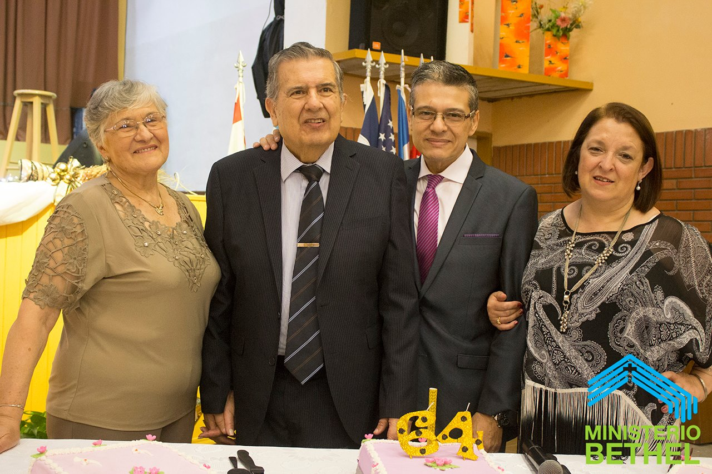

Conoce nuestro comienzo
Corría el año 1953 y llegaba a la ciudad de Córdoba, el misionero estadounidense Paul Brown, quien tenia la carga de abrir la primera Iglesia de la Unión de las Asambleas de Dios.
Para dar crecimiento a la obra propuesta se organizó una obra evangelística en la Sociedad Española. Algunas familias de la Iglesia de las Asambleas de Dios (Sobre la calle Jerónimo Luis de Cabrera) comenzaron a colaborar con esta obra.
En el año 1955, por razones de salud, el hermano Paul Brown retorno a Buenos Aires, dejando al frente de la congregación al hermano Hércules Franchino.
A los pocos años, en 1958, se adquirió una propiedad antigua en la calle Faustino Allende, de Bo. Cofico, que constaba de un pequeño salón al fondo para 30 personas.
Corría el año 1962 y una jovencita llegó a los pies de Cristo: Lidia Callejas. A los pocos meses, un joven que estaba apartado se reconcilió con el Señor. Su nombre era Santiago Zapata, hijo de Esther y Damián, fundadores de la congregación. Al año siguiente, Santiago y Lidia contrajeron matrimonio.
En el año 1967, regresando de la Conferencia Anual de la Unión de las Asambleas de Dios que se realizaba en Buenos Aires, el Pastor Franchino fallece por un accidente automovilístico. Era acompañado, en esa ocasión, por Ester y Damián Zapata, quienes resultaron ilesos.
Los hermanos Andressen tomaron el pastorado por el término de un año, regresando luego a Noruega. Posteriormente, el misionero Pablo Brannan se hizo cargo de la iglesia por dos años.

En 1975, el hermano Miguel Masalyka se encargó de la obra por espacio de cinco años. Durante su pastorado, se decidió abrir una nueva obra en Villa Allende, en la casa de unos hermanos que asistían a Bethel: el matrimonio formado por Lidia y Santiago Zapata se encargó de la tarea en ese lugar.
El Pastor Miguel Masalyka renunció al pastorado en el año 1980, quedando a cargo de la junta oficial de la iglesia, el gobierno de la misma.
En el mes de abril de 1981 fueron llamados los hermanos Santiago y Lidia Zapata para pastorear la Iglesia Bethel y, simultáneamente, siguieron atendiendo por un año más la obra en Villa Allende, dejándola luego en manos de los hermanos Noelia y Luis Godoy.
Los hermanos Lidia y Juan Masalyka fueron a servir como pastores a la iglesia Centro Cristiano, en Bv. San Juan 1296, de Bº Paso de los Andes.
Cada año se realizaba una campaña evangelística en la Plaza Rivadavia, de Bº Alta Córdoba, la cual daba excelentes resultados. Además, durante diez años, cada domingo se predicó la Palabra en el Parque las Heras. Como feliz resultado, familias completas llegaron al Señor.
Se contaba con obreros buenos y preparados, en cada área. Dos jóvenes, el matrimonio integrado por Daniel y Dámaris Pedraza son nombrados como colaboradores pastorales, quienes cumplieron dicha función por el término de siete años para partir luego, obedeciendo un llamado misionero, a Bielorrusia.
En el año 1986 un acontecimiento notable cambiaría la vida de la iglesia por completo. Varias congregaciones de Córdoba, se unieron para realizar una campaña evangelística con el Evangelista Carlos Annacondia: “Córdoba, Jesús te ama”.
Este evento, sin precedentes, superó todas las expectativas. Durante cincuenta y dos noches de campaña hubo manifestaciones del poder de Dios como nunca antes se habían visto, gente transformada por el poder del Espíritu Santo.
Una vez más se cumplía la Palabra: ¡lo que hombres y mujeres por muchos años habían sembrado con lágrimas, nosotros recogíamos los frutos con regocijo!
Cuando terminó la campaña nos encontramos ante un feliz problema: la iglesia había cuadriplicado su numero de asistentes y el nuevo templo, que hacía poco habíamos estrenado, ya no era útil. Con la necesidad de buscar un lugar más amplio, se decidió vender esta propiedad y con parte del dinero obtenido se adquirió el ex Cine Córdoba, situado en la Avda. Alem 876, de Bº Talleres Oeste.
El trece de diciembre de 1987 nos mudamos a nuestro nuevo templo. En el año 1999 comenzaron a servir como Pastores asociados los hermanos Sergio y Lily Zapata, siendo de gran bendición para la iglesia hasta la actualidad.
Hoy, no obstante la aguda crisis económica y social por la que atraviesa nuestro país y el mundo entero, la Iglesia sigue creciendo y su marcha no se detiene.
“He aquí vienen días, dice Jehová el Señor, en los cuales enviaré hambre a la tierra, no hambre de pan, ni sed de agua, sino de oír la Palabra de Jehová.” Amós 8:11
Creemos que cada edad está atendida, tanto en el área espiritual como social. Damos gracias al Señor por cada obrero fiel, por cada líder responsable que hace posible que la visión dada por Dios para Bethel, se desarrolle. No somos perfectos, pero en nosotros está la carga por las almas que se pierden y el crecimiento espiritual de cada uno de los miembros en completa santidad.
Y en este nuevo año de vida agradecemos todo lo que El Señor nos ha permitido vivir y nos alegramos en este 68º aniversario del Ministerio Bethel… Se vienen nuevos desafíos y nuevas alegrías de la mano del Señor, porque lo mejor… ¡está por venir!